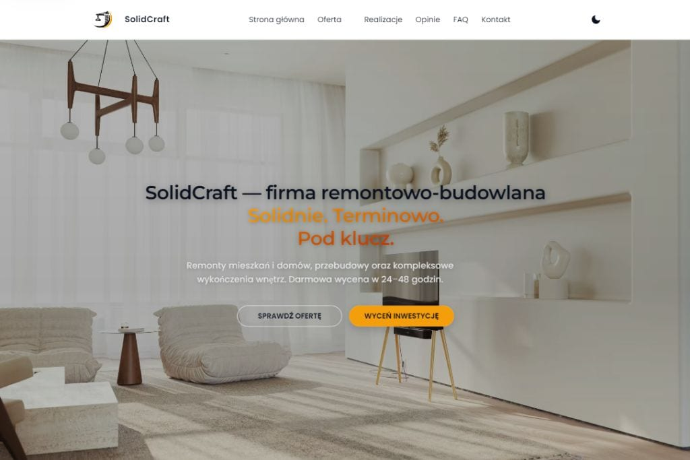

01
Solidcraft
Projekt strony dla firmy budowlanej, która ma komunikować solidność wykonania, zakres usług i gotowość do dalszego rozwoju marki online.
Przegląd projektu
Solidcraft porządkuje ofertę usług budowlanych w formie nowoczesnej, wiarygodnej i łatwej do dalszej rozbudowy strony firmowej.
Kierunek projektu został zbudowany wokół czytelnej struktury treści, mocnej prezentacji usług oraz spokojnej estetyki, która wspiera zaufanie do marki.
Układ strony stawia na szybkie zrozumienie oferty, klarowny podział sekcji i prezentację realizacji bez wizualnego chaosu. To podejście dobrze sprawdza się w branżach, w których profesjonalny odbiór marki ma duży wpływ na decyzję o kontakcie.
Projekt jest rozwijany jako dopracowany koncept portfolio. Architektura treści i komponentów pozwala później rozszerzyć serwis o kolejne podstrony, galerie realizacji lub rozbudowane sekcje ofertowe.
Strony
Biznes
Usługi
Budownictwo
Zakres i akcenty
Najważniejsze elementy projektu zostały podporządkowane mocnej prezentacji usług i profesjonalnemu odbiorowi marki.
02
Estetyka oparta na zaufaniu
03
Przestrzeń na rozwój
Technologie i standard
Projekt korzysta z lekkiego frontendu i standardów, które wspierają czytelność, wydajność i wygodne dalsze utrzymanie.
Realizacja wpisuje się w architekturę statycznego serwisu HTML, CSS i JavaScript. Dzięki temu strona zachowuje przewidywalność wdrożenia, szybkie działanie i pełną kontrolę nad strukturą interfejsu.
- semantyczny HTML wspierający dostępność i SEO,
- responsywny layout dopasowany do urządzeń mobilnych i desktopowych,
- spójny system komponentów i sekcji gotowy do dalszej rozbudowy.
Prezentacja wizualna
Widok projektu pokazuje kierunek nowoczesnej strony dla firmy wykonawczej z mocnym, uporządkowanym przekazem.

Dalszy krok
Zobacz projekt w praktyce albo wróć do pełnego portfolio.
Ta strona jest częścią rozwijanego systemu prezentacji projektów, który ma porządkować case studies i ułatwiać dalszą rozbudowę portfolio.